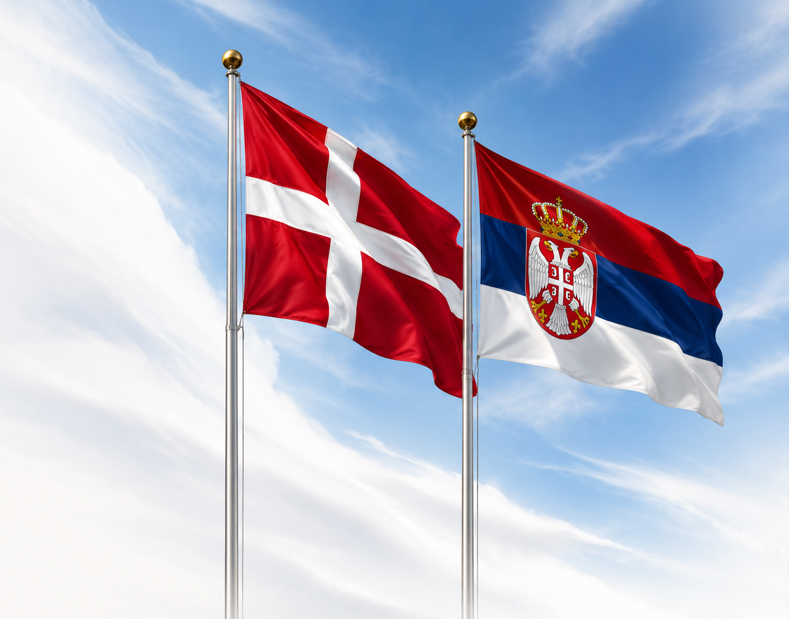

Uvoz / izvoz
Uvoz i izvoz robe iz Srbije u Dansku i obrnuto.

Polazeći od poznavanja društvenih i pravnih normi, kao i ekonomija Kraljevine Danske i Republike Srbije, a prepoznavajući ogroman potencijal za unapređivanje saradnje između pojedinaca, istaknutih ličnosti iz javnog života, udruženja i kompanija iz Kraljevine Danske i Republike Srbije u oblasti kulture, umetnosti i privrede, zagovornici intenziviranja te saradnje g-din Christian Ankerstjerne Rønneberg, istaknuti danski pravnik i veliki poštovalac Republike Srbije i njene kulture, Vladan Škorić, bivši ambasador Savezne Republike Jugoslavije u Kraljevini Danskoj i………., uz adekvatnu pravnu podršku, nastoje da kroz ovu veb prezentaciju afirmišu saradnju između fizičkih i pravnih lica iz Kraljevine Danske i Republike Srbije i pruže relevantne informacije u cilju uspešne realizacije pomenute saradnje.
Uvoz i izvoz robe iz Srbije u Dansku i obrnuto.
Osnivanje privrednih subjekata i udruženja u Republici Srbiji.
Pomoć u nalaženju adekvatnih pravnih saveta i informacija.
Tehničko-pravna podrška pri sticanju ili otuđenju nepokretnosti.
Pravna pomoć prilikom ostvarivanja različnitih prava u Republici Srbiji.
Diplomatski odnosi između Kraljevine Danske i Republike Srbije traju više od sto godina. Naime, 1917. godine su uspostavljeni diplomatski odnosi, a saradnja dve zemlje je ostvarivana u različitim oblastima.
Kraljevina Danska učestvuje na mnogim kulturnim projektima u Republici Srbiji i posebnu pažnju posvećuje kulturnoj saradnji.
Najviša vrednost robne razmene između Kraljevine Danske i Republike Srbije zabeležena je 2022. godine i iznosila je 519,9 miliona evra.
Danska privredna društva koja posluju u Repbulici Srbiji svrstavaju Kraljevinu Dansku u 20 najvećih investitora u Republici Srbiji.
Kraljevina Danska i Republika Srbija su zaključile 22 bilateralna ugovora/sporazuma od kojih su najznačajniji Ugovor između Vlade Republike Srbije i Vlade Kraljevine Danske o izbegavanju dvostrukog oporezivanja u odnosu na poreze na dohodak i na imovinu (15.05.2009.g; SGRS-MU br. 105/09) i Sporazum između Republike Srbije i Kraljevine Danske o podsticanju i uzajamnoj zaštiti ulaganja (15.05.2009.g; SGRS-MU br. 105/09)
Hillerød i Kladovo su pobratimljeni gradovi, što je epilog života i rada ljudi sa područja opštine Kladovo u gradu Hillerød.
Per Jakobsen (Hejnsvig, Danska, 23. februara 1935) je danski slavista, filolog, lingvista, akademik i univerzitetski profesor i inostrani član od 1988. godine Srpske akademije nauka i umetnosti koji je zaslužan što su danskom društvu postala dostupna dela jugoslovenskih i srpskih pisaca, kao i jugoslovenska i srpska kinematografija na danskom jeziku.
Danski zadrugarski sistem je najpoznatiji model organizovanja poljoprivredne proizvodnje i često je u stručnoj javnosti Srbije označavan kao najbolji model koji treba da sledi srpska poljoprivreda. Interesantan je podatak da su se prve poljoprivredne zadruge pojavile gotovo u isto vreme i u Kraljevini Danskoj i u tadašnjoj Kraljevini Srbiji (druga polovina XIX veka).
Kraljevina Danska i Republika Srbija ostvaruju intenzivnu saradnju u oblasti odbrane. „Srbija je naša najveći bilateralni partner u Evropi u oblasti odbrane“, izjavila je bivša ambasadorka Kraljevine Danske u Srbiji, NJ. E. Mette Kjuel Nielsen.
Vilijam Teodor Melgard (Wilhelm Theodor Mollgaard, 1888-1920), danski je lekar koji je 1915. godine, tokom Prvog svetskog rata, stigao u okviru danske medicinske misije u Srbiju, deleći tešku sudbinu srpskog naroda. Iz svoje velike ljubavi prema Srbiji ostao je da živi u njoj, osnivajući svoju porodicu. Preminuo je 1920. godine u Kuršumliji, gde je i sahranjen.
Ekonomska razmena između Kraljevine Danske i Republike Srbije je u protekle tri godine doživela eksponencijalni rast, te je tako vrednost robne razmene u 2021. godini iznosla 273.9 miliona evra, da bi naredne 2022. godine vrednost robne razmene iznosila čak 519,9 miliona evra, uz naznake da će trgovinska razmena između dvaju zemalja ići uzlaznim putem, na šta je ukazao i ministar inostranih poslova Kraljevine Danske g-din L. L. Rasmusen, prilikom zvanične posete Republici Srbiji 28. septembra 2023. godine
Između Kraljevine Danske i Republike Srbije su zaključeni Ugovor između Vlade Republike Srbije i Vlade Kraljevine Danske o izbegavanju dvostrukog oporezivanja u odnosu na poreze na dohodak i na imovinu (15.05.2009.g; SGRS-MU br. 105/09) i Sporazum između Republike Srbije i Kraljevine Danske o podsticanju i uzajamnoj zaštiti ulaganja (15.05.2009.g; SGRS-MU br. 105/09), koji predstavljaju, uz ostale zaključene bilateralne ugovore i sporazume, pravni okvir za zaštitu interesa investitora iz obe države potpisnice.
Saobraćajne veze između Kraljevine Danske i Repbulike Srbije su izuzetno dobre, o čemu svedoče brojne avionske i autobuske linije.
Mnogi privredni subjekti iz Kraljevine Danske uspešno posluju u Republici Srbiji, od kojih neki čak dugi niz godina, poput NOVO NORDISK PHARMA, GRUNDFOS SRBIJA…
Republika Srbija ima sa niz zemalja potpisane sporazume o slobodnoj trgovini od kojih neke predstavljaju velika tržišta poput Narodne Republike Kine. „Everrest production“ je kinesko-danska kompanija koja je otvorila fabriku za proizvodnju memorijske pene u Rumi.
Da je Republika Srbija respektabilno mesto za investicije najbolje govori podatak da je u Srbiju investirano preko 42 biliona evra od 2007. godine putem direktnih stranih investicija.
U Republici Srbiji se jednostavno i brzo osniva/registruje privredno društvo, preduzetnik ili udruženje. Minimalni osnivački kapital za najpopularniju formu privrednog društva – društvo sa ograničenom odgovornošću iznosi svega 100 RSD (oko 6,36 danskih kruna).
Stopa poreza na dobit pravnog lica iznosi 15%. Isplata dividende fizičkim licima (i rezidentima i nerezidentima) se oporezuje 15% na bruto iznos dividende, U slučaju isplate dividende stranom pravnom licu primenjuje se stopa od 20%.
U Republici Srbiji je moguće osnovati za određene delatnosti preduzetnika i zahtevati paušalno oporezivanje, a visina poreza i doprinosa zavisnosti od mesta osnivanja, delatnosti i drugih propisanih kriterijuma.
Srbija ima visokokvalifikovanu i dinamičnu, a još uvek relativno jeftinu radnu snagu.
Privredno društvo ne mora imati zaposlena lica, a direktori i ostali zakonski zastupnici ne moraju imati prebivalište u Republici Srbiji.
Republika Srbija je atraktivna za investiranje i zbog svog geografskog položaja i dobrih saobraćajnih ruta koje povezuju Istočnu Evropu i Aziju, sa Centralnom, Zapadnom i Severnom Evropom.